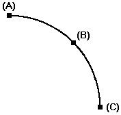

Arc By 3 Points command
Use the Arc By 3 Points command to draw an arc using three points. The first point defines an end point. You can then either define a point on the arc and then the end point, or the end point and then a point on the arc. The end points are not tangent or perpendicular to other elements.
